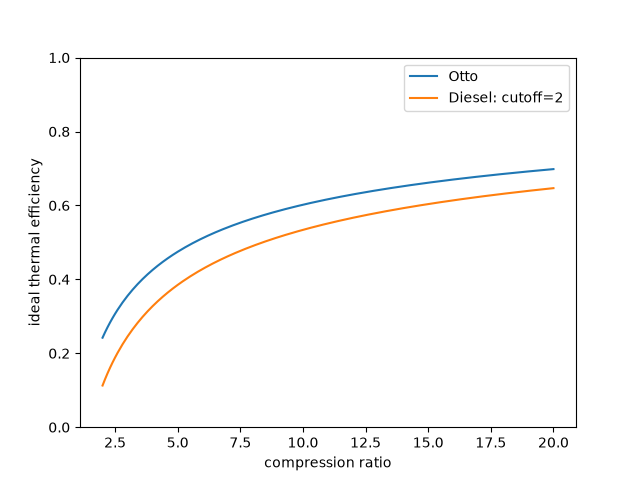

Note
Go to the end to download the full example code or to run this example in your browser via JupyterLite.
Ideal power-cycle efficiency#
Compute an inspectable engineering model using SI inputs. See the linked domain guide for assumptions and benchmark checks.

import matplotlib.pyplot as plt
import numpy as np
from engineeringkit.thermodynamics import diesel_efficiency, otto_efficiency
ratio = np.linspace(2, 20, 181)
fig, ax = plt.subplots()
ax.plot(ratio, [otto_efficiency(r) for r in ratio], label="Otto")
ax.plot(ratio, [diesel_efficiency(r, 2) for r in ratio], label="Diesel: cutoff=2")
ax.set(xlabel="compression ratio", ylabel="ideal thermal efficiency", ylim=(0, 1))
ax.legend()
plt.show()
Total running time of the script: (0 minutes 0.079 seconds)